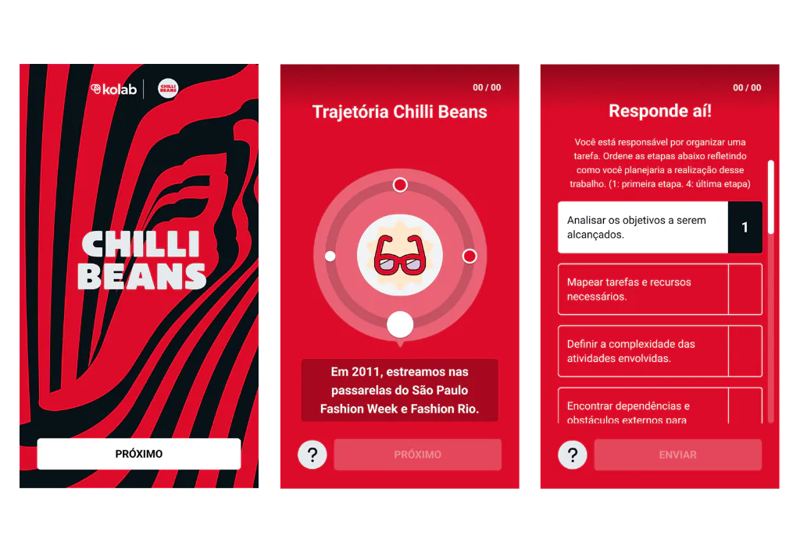
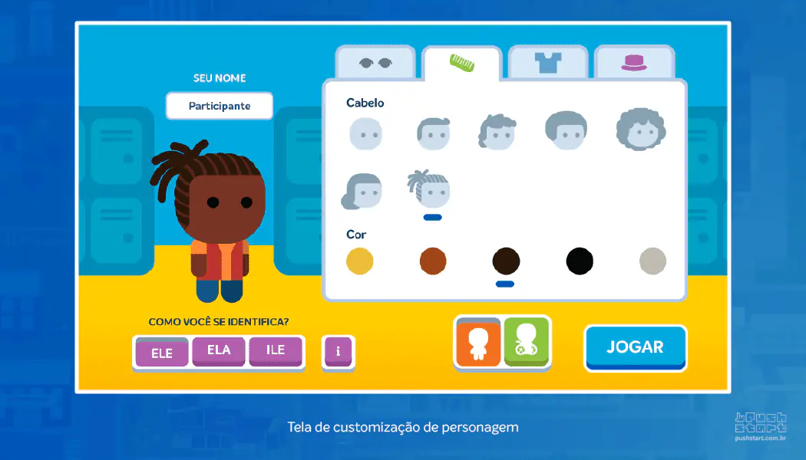

Professional Projects
This section showcases projects I contributed to as part of my professional employment. All intellectual property rights remain with their respective owners.

HR Tech Gamified Stories
HR Tech Gamified Stories is an interactive web experience inspired by Instagram Stories that delivers customizable, gamified experiences for recruitment, onboarding, cultural fit assessments, training, marketing, quizzes and more.
Over four years, hundreds of products were delivered to dozens of companies, including Ambev, Braskem, PepsiCo, Itaú, Raízen, and Bradesco. The platform reached thousands of users across multiple Latin American countries.

Glitchers: Hack 'Em Up
Glitchers: Hack 'Em Up is a casual fantasy beat 'em up featuring puzzle mechanics. Players take control of Trix, accompanied by her companion Ada, as they hack and slash their way through enemies.
The project was developed in under three months as a vertical slice for a grant proposal submitted to SPCine.

HR Tech RPGs
PushStart developed and released multiple RPG-style games for a variety of purposes, including assessment tools for recruitment processes, interactive experiences introducing candidates to companies and their cultures, and themed experiences for special events such as the FIFA World Cup.
Clients included Braskem, IEL, Ambev, and PepsiCo. A selection of the games was released in multiple languages, with one title available in four.

Time Hoppers: The Silk Road
Time Hoppers: The Silk Road is an adventure RPG for children. The story follows four friends who discover time travel and embark on a mission to protect scientists and their inventions throughout history from an ambitious antagonist.
Created for Milo Productions Inc. for a grant proposal, the project was developed as a vertical slice within a three-month timeframe

ST Math Games
ST Math is a supplemental math education program that uses interactive games to teach mathematical concepts through visual learning, problem-solving, and immediate feedback.
PushStart Studio delivered over 100 games for the platform, following MIND Education's technical and design standards.